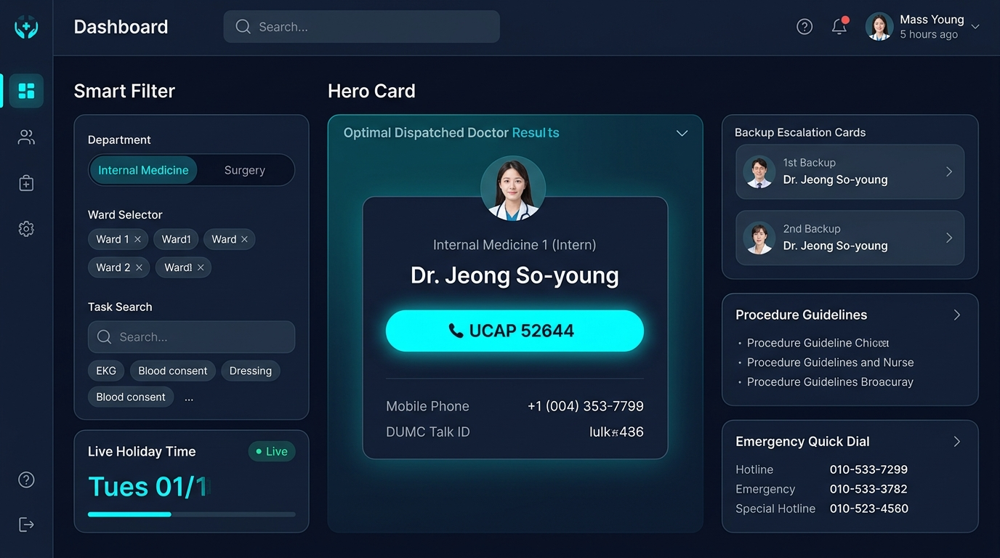
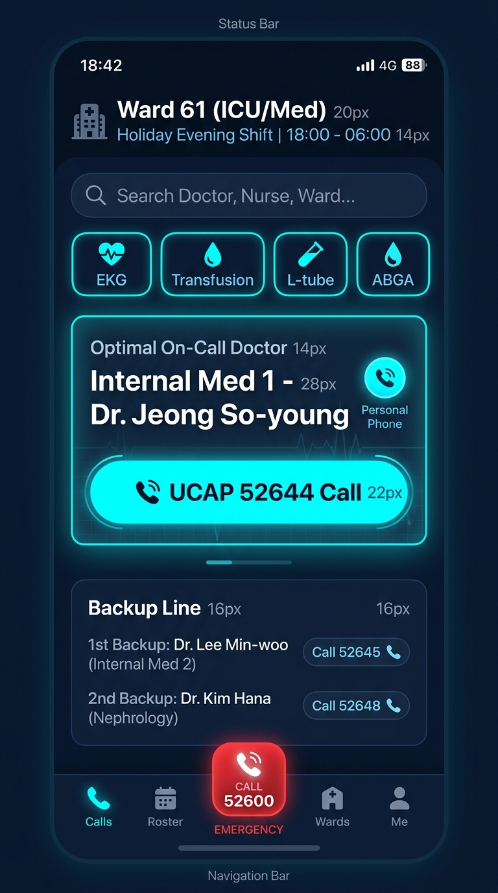

간호사실 스테이션 PC 및 병동 순회용 스마트폰을 위한 고화질 디자인 목업
• 3단 레이아웃: 좌측 스마트 필터(진료과/병동/업무) | 중앙 최우선 당직의 히어로 카드(초대형 UCAP 발광 다이얼) | 우측 백업 라인 & 긴급 핫라인
• 클리니컬 다크 모드: 야간 근무 시 간호사 눈 피로 경감 및 호출 번호 시인성 극대화

• 원핸드 탭: 상단 4대 핵심 업무(EKG, 수혈, L-tube, ABGA) 1초 퀵필터 및 중앙 대형 다이얼 버튼
• 에스컬레이션 백업 라인: 1순위 부재 시 2순위/3순위 즉시 발신 및 하단 비상 핫라인(코드블루)
